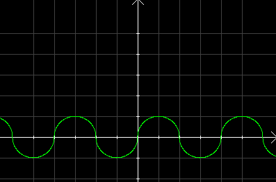

| Choisissez votre langue ! | Choose your language ! |

- Quelle est l'antipériode de f ?
- Quelle est la période de f ?
- Sachant que les motifs sont des demi-cercles, écrire un programme Python et/ou Julia qui calcule f(x) ∀x∈ℝ et qui trace le graphe de la fonction.
aide
S'inspirer du programme donné en exemple dans le cours:
solution
- L'antipériode est 2.
- La période est 4.
-
Pour Python :
-
Pour Julia :
- What is the antiperiod of f ?
- What is the period of f ?
- Knowing that the patterns are semicircles, write a python and/or julia program that calculates f(x) ∀x∈ℝ and which draws the graph of the function.
hint
Take inspiration from the program given as an example in the course:
solution
- The antiperiod is 2.
- The period is est 4.
-
With Python :
-
With Julia :
|
Création Gilles Dubois
Created by Gilles Dubois
|
Janvier 2022
January 2022
|
Version mobile Jquery
Mobile Jquery version
|
|